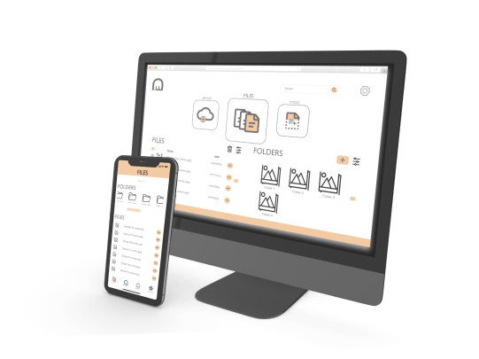
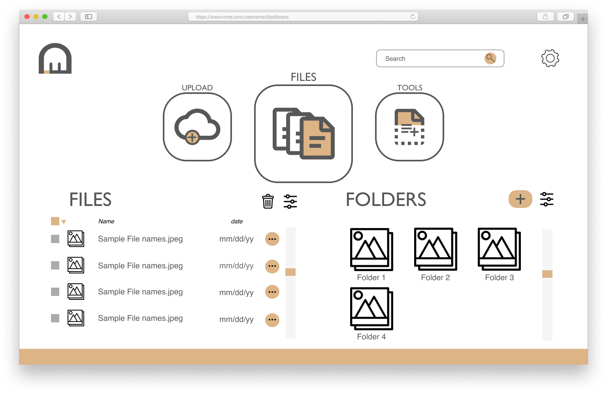
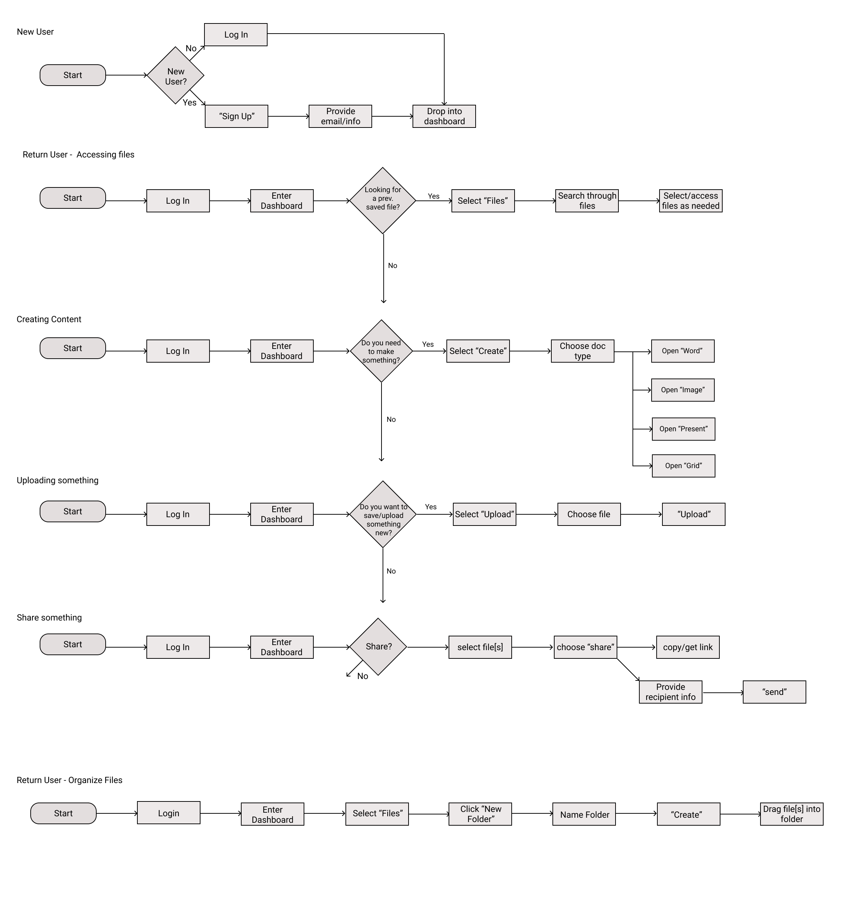
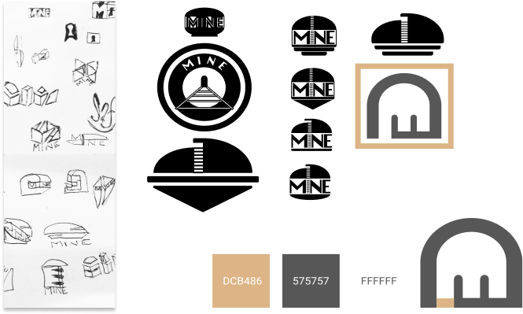
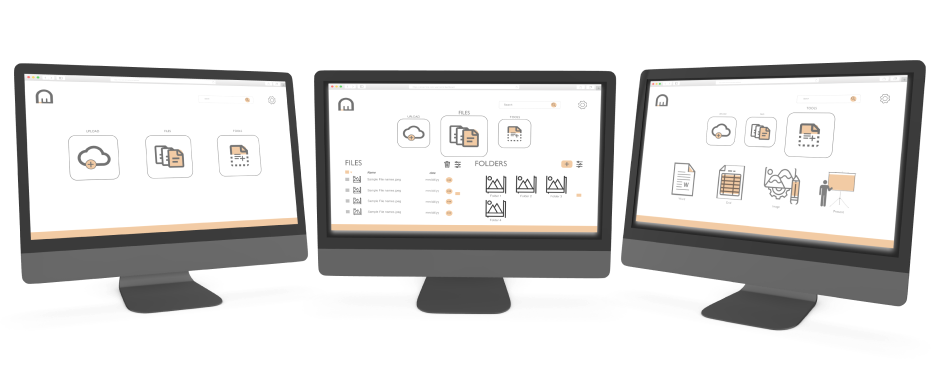

Mine
a minimal cloud storage solution
View Prototype Problem
My client wanted to break into the cloud storage space with a clear idea of what kind of features they wanted their service to provide, but not much else. They needed a name, a brand, and a designer platform that could achieve their goals and offer a unique alternative to the existing cloud services. I was tasked with creating a design that would fulfill their functional demands and create a compelling brand to build a business on.
Solution
The solution I designed was rooted in research. Survey data showed existing cloud storage users’ main complaints about their chosen platforms were they wanted more free space, and their ‘clouds’ were difficult to organize. Using survey data, I developed a set of user stories that designated the key features of the new service: allow users to organize their data, keep it free or cheap, allow users to share, and offer content creation tools. These limited, key functions influenced the rest of my design choices and led to a minimal, Brutalism-inspired interface that I believe will differentiate my client’s cloud storage service from existing competitors, and address their users’ frustrations.
Survey
As a general picture, backing up files for free is the main reason why people use cloud storage, with content creation being a strong second. A deliberate focus on sharing may be unnecessary, as most people value the ability to share content, but do it less frequently. With this information in mind, I saw the client having two options: stick to the basics of offering cheap storage, and improve on usability; or investigate the Adobe model for cloud storage, and license out superior content creation tools for users. Since either direction would benefit from a simple, strong design scheme, I left this eventual decision up to my client and proceeded to gather more information to design from.
View Full Analysis- 91.3%
Use cloud storage
- 95.2%
Use to save or backup files
- 61.9%
Use for content creation tools
- 19%
Use to save web content
- 28.6%
Frustrated with high costs of services
- 19%
Frustrated by poor organization
- 81%
Do not pay for cloud storage
- 90.5%
Would only pay between 0-10/mo
Competitive Analysis
Now that I had useful survey data to contextualize the cloud storage space, I decided to look at what existing cloud companies were doing with their platforms. I chose three popular cloud storage providers to perform a competitive analysis on: Box, Google Drive, and Dropbox. The experience of looking at these services simultaneously was informative but boring. In the end, I had three main insights:
View Full Analysis- Similar layouts throughout
- Strong incentive to acquire corporate contracts by leveraging existing clients
- Seeming lack of interest in innovating individual user experience
Personas
These user types were created from the larger trends of my survey results. The primary features that people reported wanting were the abilities to save/backup personal files, create content, and to a lesser extent, save internet content. Consequently, I made three personas based on these key features. Fleshing out these personas into believable characters made it easier to remember who I wanted to design this service for, and how common users would be interacting with it.
View Full PersonasThe Saver
The Content Creator
The Meme Lord
- Empathize with the user
- Reflect their priorities in the IA
- Extrapolate their priorities into larger lessons about them
User Flows
I already knew based on the simple requests of potential users seen in the survey data, and their wishes for increased organization, my designs would benefit from staying minimal. I knew that a central dashboard was a common and successful design choice among other cloud services, and so thought that a user’s choices should likely radiate out from one. After a login process, users would be dropped into a dashboard that would allow them to pursue their likely actions from a single location. I was not sure what that might look like at this point, but I was beginning to get ideas for my next step.
View All User Flows Wireframes
At this stage, I was ready to start working on preliminary visual designs. With all of the prior prep work done, this essentially became translating my write ups into wireframes that I kept improving. Below shows the development of some key screens for the service.
View All WireframesTesting
It was important to make sure I was on the right track with my design, so using figma prototyping tools, I created a clickable prototype of my wireframes for individuals to be tested with. I wrote a test script to standardize participant’s experiences, and keep the process running smoothly. From these tests, I was able to learn where there was room to improve in my design, and where users were having problems. Some of these problems were due to my ordering of the prototype screens, some were from limitations of the prototyping tool itself, but several were from design issues I created.
View Test Prototype Test Script and Results- Ensure selection of files extends to the check box
- Add icons for adding new options/files
- Slider icons for ‘View Options’
- Drag/drop usability
Branding
With the functional priorities of the client being addressed, I needed to develop a compelling name and brand for the service. When I began this project, I felt drawn to Brutalist architecture and modern design. Consequently, when thinking about logos, I wanted something strong and simple: a shape like that would both allude to a defensive structure, and form a coherent message of utilitarian simplicity with the interface design. I chose to use a shape inspired by the Atlantic Wall bunkers and Le Corbusier’s buildings. I carried this theme into other branding elements and codified them in a style guide for the service.
View Style Guide Mockups
It was important to make sure I was on the right track with my design, so using figma prototyping tools, I created a clickable prototype of my wireframes for individuals to be tested with. I wrote a test script to standardize participant’s experiences, and keep the process running smoothly. From these tests, I was able to learn where there was room to improve in my design, and where users were having problems. Some of these problems were due to my ordering of the prototype screens, some were from limitations of the prototyping tool itself, but several were from design issues I created.
View All Mockups View PrototypeConclusion
I believe overall, the project is successful in comprehensively fulfilling the client’s needs as well as providing a new take on cloud storage interface. The minimal dashboard limits the potential for clutter, and a simplistic two-column organization system for files and folders ensures users will always know where their files are. A lack of mysterious or redundant icons around the pages also ensures that if a user wants to complete an action, they do not need to go hunting for the right dropdown. Finally, the branding of the service is not aggressive or distracting, and complements the tone the design itself is trying to create. Despite the successes I believe I achieved, there is always room for improvement. My initial survey data was very influential to my later design choices, and I wish I could have done more rounds of testing to tease out more potential insights. After developing my design and working on refinements, I also learned that it’s sometimes useful to compromise on your vision to improve the actual user’s experience. Aesthetic purity may not be a winning strategy in UX design. I will take these lessons into my next projects, and look forward to future challenges.
